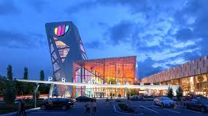
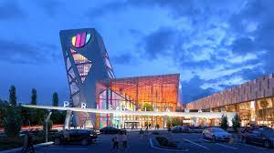

Prishtina Mall is a shopping center in Prishtina, located near the M2 Motorway in the direction of Ferizaj. Prishtina Mall was opened on 9 March 2023, as the biggest shopping center in Kosovo and one of the biggest in the Balkans.
 
